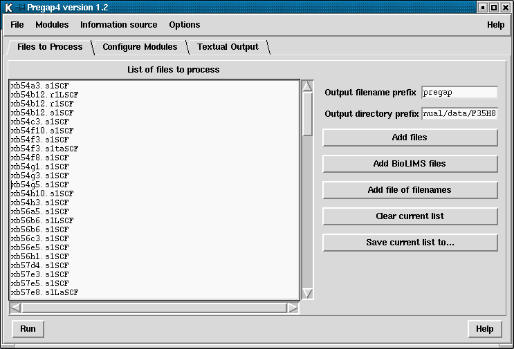

Pregap4 operates on batches of files. These files can be
binary trace files (in ABI, ALF or SCF format), Experiment Files, or plain
text, and do not need to all be in the same format. The Files to Process
Window is used to define which files are to be processed.
The "Files to Process" dialogue (see below)
can be brought up from the File menu, or
by pressing the appropriate tab when in compact_win mode.

On the left hand side of the figure is the current list of files to process. This list can be edited simply by clicking with the mouse and typing.
On the right side of the panel is the pregap4 output filename prefix, the output directory name, and several buttons. The filename prefix is used when pregap4 needs to create files. For example after processing there may be prefix.passed, prefix.failed files. All files will be created within the output directory.
The buttons allow selection of the files to process. The "Add files" button will bring up a file browser, which will allow one or more files to be selected. Pressing Ok on the file browser will then add the selected files to the "List of files to process" panel on the left side of the pregap4 window.
The "Add file of filenames" button may be used to select a list of files whose filenames have been written to a `file of filenames'.
The "Clear current list" button will remove all filenames from the list.
Both the "Add files" and "Add file of filenames" button append their selections to the list of files to process, so to replace the current list the "Clear current list" button must first be used.
The "Save current list to..." button may be used to produce a new file of filenames, containing the combined list of files to process.